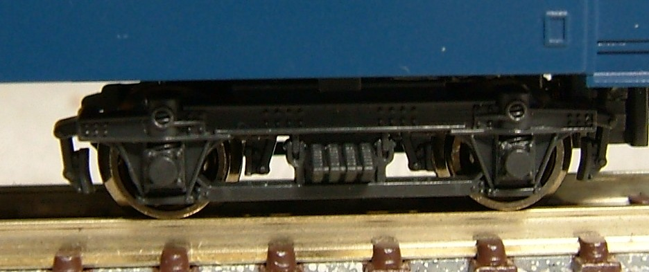

模型で見るオハ35のバラエティ
オハ35は1939年〜1948年にかけて製造された普通車です。 折妻、丸屋根でスハ32の狭窓を1mの窓に変えたものですが、 製造は太平洋戦争をまたいで行われ途中で車体構造が変わっていっていかます。
製造量数はなんと1301両。 車体構造や台車のバリエーションもあり、他形式からの編入改造もありといろいろです。
台車はペンシルバニア型のTR23/TR34を履きますが、
後期の車両はウィングばね式のTR40を装備して別形式となりました。
当初は優等列車で使用されましたが、より乗り心地がよいTR47を装備したスハ43系列が製造されると
そちらが優等列車で使用されるようになりました。
重量の点では有利でしたが、こちらもり軽い軽量客車のナハ10/11ができるとそちらが使用されたため
優等列車からは退き、ローカル運用を主にこなしていました。
オハ35 戦前型(一般型)
いわゆる丸屋根の車両で、スハ32系の600mm幅の窓を1,000mmにした車両です。 基本的にはリベットで組み立てられています。 製造の後半になると全溶接でリベットなしの車両、 ウィンドウシル・ウィンドウヘッダを省略した車両など試作車的な要素を持つ車両が出てきました。
1980-90年代は旧客はKATOがスハ43、トミックスがオハ35とすみわけがされていました。
トミックスのオハ35は表現が無骨でテールライトがつかないとかありましたが、
あれはあれで味があってよかったですね。
グリーンマックスの参入後も、どちらかというとKATOと寸法的にあってるのはトミックスでして、
私はトミックスのシル・ヘッダを薄く削ってはめ込み窓化するなどしていました。
2000年代に入りKATOが参入し、その後トミックスも旧客に再参入して今に至ります。
KATOの"一般型"の製品です。 ベンチレーター、屋根ステップを別パーツ化しました。 青・茶色がそれぞれ在籍しますがこのタイプの車両は戦後型と比べて形態的にバリエーションが少なく バリエーションを集めているうちになぜか少数派になってしまいます。。。
オハ35の形態
オハ35系は、製造期間が長期にわたるため、上記 "一般形" さらに "戦後型"、その中でも
さまざまな形態が存在しています。
KATOのオハ35をタネに、その形態を作り分けているので模型で紹介します。
1〜693は、丸屋根となっています。
屋根はキャンバス屋根・丸屋根という旧型客車の標準のスタイルです。
模型はKATOの標準型そのまま。
ただし、張り上げ屋根やノーシル・ノーヘッダなど、多数の試作車が存在しています

戦後製となる700以降は、車端部の屋根の絞り折妻となりまる。
このうち 700〜1159は車端部にかけて屋根が絞られている通称
"絞り折妻"をしています。KATOの戦後型がこの形態です。
基本は鋼板屋根ですが、一部キャンバス屋根も存在します。

1160〜1307は、車端部にかけての屋根の絞りがなくなり、通称
"キノコ折妻"となります。こちらもキャンバス屋根と鋼板屋根の
2種が存在します。
台車違いで登場しているスハ42・オハ36・スハ40もこの形態です。
写真は鋼板屋根のタイプ。キャンバス押さえがありません。KATO オハフ33から改造しました。
同、キャンバス屋根のタイプです。 こちらもKATO オハフ33から。イエロートレインのキャンバス押さえを接着しています。
車体

戦前の標準型は、車体にリベットが並びます。

戦前型でも、550〜693は車体が全溶接となり、
リベットが無いすっきりした車体になっています。
KATOの標準型からリベットを削って作りました。
戦前の標準型は、車体にリベットが並びます。
戦前型でも、550〜693は車体が全溶接となり、
リベットが無いすっきりした車体になっています。
KATOの標準型からリベットを削って作りました。
台車
|
標準的なTR23です。それまで使われていたイコライザ式のTR11から大きく変わり、
軸箱にそれぞれ直接軸ばねがつく構造となりました。
「ペンシルバニア型」というのだそうです。 |
|  |
TR23のコロ軸受け改造タイプ。マニ36型でばね強化と一緒にコロ軸受け化されたものは"TR23G”と
型式名がついてるようなのですが、オハ35/オハフ33でTR23を改造したものに
何らかの型式がついてるのかはわかりませんでした…。 ちなみにオハ47型に採用されてるものはTR23Hとちゃんと型式名がついてます。 |
|
700〜の戦後型は、ボールベアリングを装備しました。 ベアリングを大量に使用する航空機の需要が戦争の終結により一気に減ったため、 その救済用に鉄道でベアリングを使用するようにしたそうです。 ころ軸受け用に設計されたTR34と、TR23をコロ軸受けに改造した物が混在していたようです。 KATOの戦後型はオハ35がTR34、オハフ33がTR23のコロ軸受けタイプを装備しています。 |

|
TR23系列の台車は、軸ばねの1点で軸箱を支持しているため工作精度により軸箱守に片摩耗が出やすく、
それをウィングばね式にして改善したのがTR40となります。 |